It is possible to create new raster surfaces by selecting New Raster...
from the File menu, by pressing the 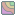
button, or by using the shortcut key Ctrl-N. You will be presented with a dialogue window
allowing the bounds, resolution and map projection of the new raster to be changed. The default settings create
a raster with 100 rows and 100 columns. The new raster can be either a polynomial expression or a
fractal surface with a user-defined fractal dimension.
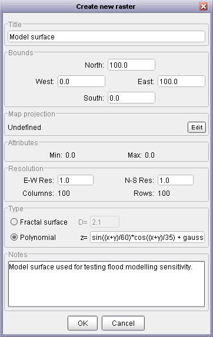
New raster window using polynomial expression and metadata.
For modelling and simulation purposes it is sometimes useful to create artificial surfaces with known
characteristics. By selecting Polynomial from the Create New Raster window,
you can define surfaces using variables and functions. Some of the more common are identified below.
For a full list see the LandScript function reference.
| Expression | Explanation |
x | the x position of each raster cell. x is scaled to be +- nCols/2, where nCols is the number of columns in the raster |
y | the y position of each raster cell. y is scaled to be +- nRows/2, where nRows is the number of rows in the raster |
z1 | the value of any given cell in the primary raster. |
z2 | the value of any given cell in the secondary raster. This will only be meaningful if a secondary raster has been selected; if it does not, z2 will always return 0. |
pi(), e() | The constants PI (3.1459) and e (2.7183) |
+, -, *, /, ^ | Addition, subtraction, multiplication, division and power operators. |
cos(), sin(), tan() | trigonometrical functions. Expects angles to be given in radians (to convert from
degrees into radians multiply by pi()/180 or 0.01745329). Values of infinity (e.g.
tan(pi/2)) are returned as 0. |
acos(), asin(), atan(), atan2() | inverse trigonometrical functions. Returns values in radians (to convert from radians into degrees multiply by 180/pi() or 57.2957795). Values outside of the range of +-1 supplied to these functions will return a value of 0. |
sqrt() | Square root. If the value given to the function is negative, the function will return a 0. |
ln() | Natural logarithm (to base e). If the value given to the function is <=0, the function will return a zero. |
rand() | Random value with 'rectangular' distribution between 0 and 1. |
gauss() | Random value with Gaussian (normal) distribution with mean of 0 and standard deviation of 1. |
ifelse(condition, value_if true, value_if_false) | Evaluates the expression condition. If the condition is true or evaluates to a non-zero value, returns value_if_true otherwise returns value_if_false. |
| Example | Explanation |
x+y | Creates a plane sloping from bottom right to top left. |
0 - (x^2 + y^2) | Creates a convex-up dome. |
z1-z2 | Creates a difference map of the differences between the primary and secondary rasters. |
100 - sqrt((x*y*sin(x*y/200) * cos(y/30))+(x^2+y^2)) | Complex polynomial (central peak with surrounding valleys). |
z1 + (gauss()*10) | Adds a random gaussian value with mean of 0 and standard deviation of 10 to each cell in the primary raster. |
ifelse(z1<10,10,z1) | Creates a 'flooded' version of the primary raster with the 'water level' set to 10 vertical units. |
Expressions that are incorrectly specified (e.g. using unknown functions, or failure to close brackets) are highlighted
in the edit window and prevent it from being closed.
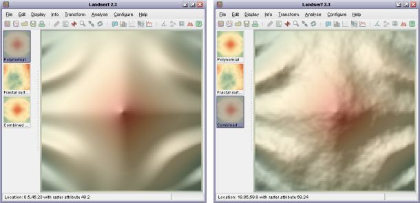
Polynomial and combined polynomial and fractal surfaces.
By selecting Fractal from the Create New Raster window, more realistic terrain surfaces may be
created for modelling and simulation purposes. The roughness of such surfaces can be controlled by entering a fractal dimension
between 2.0 (smooth) and 3.0 (very rough). Typical landscapes have fractal dimensions of around 2.1.
These may also be combined with smoother polynomial surfaces, as shown in the figure above. This can be achieved by creating a
fractal surface and a separate a polynomial surface and finally creating a new polynomial as
z1+z2, thus combining the two simulated fields.
New vector maps can be created either by selecting New Vector...
from the File menu or by pressing the  button. You will be presented with a dialogue window allowing the bounds of the new map to be changed.
Initially this vector map will be 'empty', but it is possible to add vector objects through on-screen
digitizing.
button. You will be presented with a dialogue window allowing the bounds of the new map to be changed.
Initially this vector map will be 'empty', but it is possible to add vector objects through on-screen
digitizing.
To digitize new data, make sure a vector map is selected (either an empty vector map as described above,
or an existing one to which manually digitized objects are to be added), then select either the
Edit->Digitize Mode menu option or the 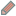
button.
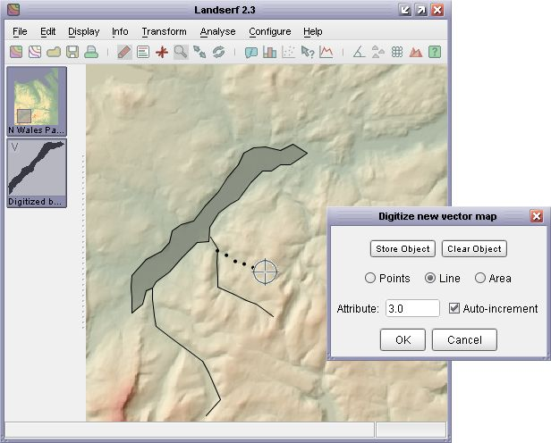
Digitizing new vector objects.
You will then be presented with a small window (see the figure above) that provides you with the option
of creating vector points, lines or areas. By clicking in the main LandSerf window with the left mouse
button, coordinates can be added to a new vector object. The numeric attribute to be associated with that
object can also be defined at this stage. If the auto-increment option is selected, the numeric
attribute associated with the object will be increased by one every time an object is digitized. This can be
particularly useful if you wish to digitize a series of waypoints. To store the digitized points, press the
Store object button. Pressing Clear object will clear the points in the currently
digitized object (but not the vector map as a whole). Pressing Cancel will quit from digitize
mode without saving any of the newly digitized objects.
To make the process of digitizing easier and more precise, any raster data can be displayed on screen
while digitizing, and the main display can be panned with the right mouse button (or <shift> left-click).
If you wish to zoom in or out, you can use the mouse wheel or temporarily toggle between digitize mode and zoom mode
by selecting the  and
buttons or the appropriate menu options.
and
buttons or the appropriate menu options.
Complex polygons with holes and islands can also be digitized. To do this, digitize the outer boundary first,
making sure it is stored as an area object by pressing the Store Object button. To cut a hole in
the polygon just created, ensuring that the attribute matches that of the existing polygon, digitize the boundary
of the hole, but with the Control key pressed down. Once this hole has been created, pressing the
Store Object should create the hole.
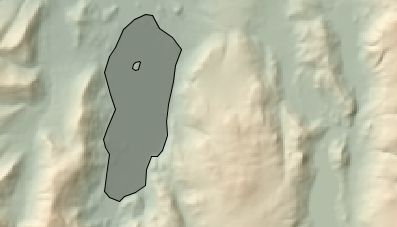
Digitizing complex polygons with holes and islands.
It is often easier to digitize if before selecting the digitize option, you set the Display->Vector appearance...
to display point labels, a point size of about 3.0, and line width of about 2.0. This will make it easier to see the objects
you have already digitized along with their attribute values.
It is possible to combine the primary and secondary raster into a single raster layer by selecting the
Edit->Combine rasters... menu option. This allows rasters that do not have the same spatial
extent to be merged into a single object. This can be particularly useful for assembling 'tiled' datasets.
Assuming a primary and a secondary raster have been selected in the thumbnail view, selecting the Combine Rasters
option will bring up a window similar to the one shown below. If the spatial extents of both rasters overlap but are
not identical, you will have the option of either selecting the intersection of the two
layers, or their union. For cell locations that are present in both rasters, you can select the
output value for those locations to be the primary raster cell value, the secondary raster cell value,
or the average of the two. Additionally, you can choose to override this selection for cells where the
chosen raster value is null but would be a numeric value if selected from the other raster.
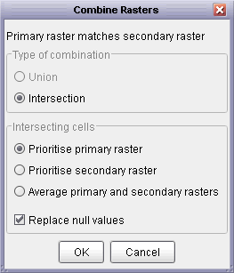
Raster combination options.
Vector maps can be combined in much the same way as raster data. Select the two maps to be combined as primary
and secondary vector maps, then choose the Edit->Combine vector maps... menu option. As with
raster combination, if the two vector map areas overlap you will have the option of either selecting the
intersection of the two maps, or their union. You will also have the option of using the
intersection/union of the bounding rectangle of the entire map, or the combination of the vector objects.
This second option is useful if you wish to select all objects that fall within a given set of polygons for example.
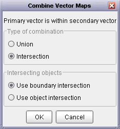
Vector combination options.
The spatial extent of vector maps or the objects within them can be used to cut out selected portions of raster data.
Parts of the the raster map that fall outside the vectors are replaced with null values and those parts within are retained.
To do this, make sure you have a primary raster and primary vector map displayed, then select Edit->Combine raster and vector map....
By selecting Intersection as the type of combination and Use object intersection as the type, LandSerf
will create a new raster consisting of any of the primary raster's cells that fall within any area objects in the primary
vector. If Use boundary intersection is selected, the enclosing rectangle of the vector map is used as the basis
for raster selection.
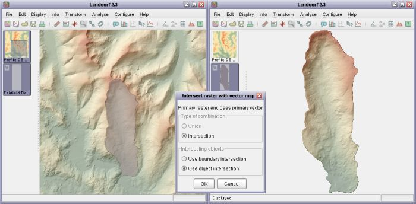
Cookie cutting a raster with a vector object.
Choosing Edit->Select vector objects... allows a copy of a vector map to be created containing only
objects with the given set of attributes. In the window that appears, enter numeric attribute IDs in the Attributes to select
field. These should be comma separated and can contain ranges of values separated by 'to'. To copy null values,
'n' can be entered. The following are therefore all examples of valid entries:
1
10,6,250
1 to 99,-999
0,n
The final way in which spatial objects may be combined requires a primary vector map containing point objects and
a primary raster map. By selecting Edit->Combine points with raster, a new attribute is associated with
each point object. That attribute is based on the raster cell value at that point. This provides a convenient way of,
for example, using a DEM to create spot heights for selected locations.
Both raster and vector data are associated with numeric attribute values. However, this can be limiting for data that have non-numeric or multiple attributes. In order to overcome this, any raster or vector map in LandSerf can be linked to an attribute table that defines the relations between numeric attributes (the 'ID' or 'key') and any other numeric or textual attribute values.
To create an attribute table, select either Edit Raster or Edit Vector as
appropriate and then click the Edit button in the Attributes area (adjacent
to the minimum/maximum attribute values). This should open a new attribute table editor that allows
you to add rows and columns to the attribute table as well as load or save them from/to a file. Any
attribute can be edited by clicking on the appropriate cell in the table. Attribute type names (column
headings) can be changed by clicking the relevant column header.
Attributes can be either numeric or textual. Textual attributes have the advantage of allowing
meaningful descriptions to be attached to objects, while numeric attributes can be manipulated
analytically, for example, by calculating their average. By default, if you add a new attribute
to a table, it is assumed to be textual. If all rows in the table of a textual attribute happen
to be numbers, they can be converted to numeric attributes by pressing the Validate
button.
All attribute tables have an active attribute associated with them. This attribute is indicated
in bold in the editor window (see figure below for an example). The active attribute is the one that
is displayed when querying a raster or vector. To make any attribute active, simply click one of the
values in the relevant table column.
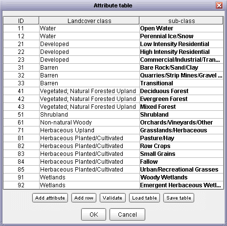
Attribute table.
All spatial objects (raster and vectors) can be associated with metadata describing the spatial properties of the object (bounds, resolution and map projection). They can also be classified into different object types (e.g. elevation, slope, features, fuzzy membership, image, contours, TINs etc.) that determine the type of operations that can be performed on them and the way in which they are displayed.
To edit either a raster or vector object, select it then choose the Edit->Edit Raster
or Edit->Edit Vector menu item. Bounds, resolution (raster only), map projection, type,
colour table and supplementary notes can all be changed from this window. Bounds can be changed either by
typing new coordinates for each of the four edges of the object, or by dragging the mouse in the main display
window to identify a sub-area of the object. To 'cut out' a subset of an object,
make sure the Extract subset option is selected. To change the resolution of a raster
object, ensure the Interpolate to new resolution option is selected and appropriate values
are entered in the N-S Res and E-W Res fields. This technique can be used to
remove 'steps' in a coarse DEM, or to provide an optimal sampling strategy for rasters that are too large
for effective processing.
If you know the map projection system used to represent a spatial object, this can be set by clicking
the Edit button in the Map projection section of the edit window. You can choose
between a limited set of projections and ellipsoids. Note that changing the projection information here does
not reproject the spatial data. To transform the data from one projection system to another, select an
appropriate option from the Transform->Reproject menu (see Section 3.7.1 below).
 Projection information.
Projection information.
To commit changes made in the edit window, press the OK button. If there is an inconsistency
between the new raster bounds and the resolution and neither the resampling or subset options are selected,
the relevant fields will be highlighted when you attempt to exit the window.
Rasters and vectors can be removed by selecting the relevant thumbnail view and then selecting either the
File->Close raster or File->Close vector menu option. You can also
close all spatial objects by selecting the File->Close all... option.
Some vector objects may contain detail that is not required for analysis or display. Detailed vector boundaries
can slow down performance and consume unnecessary resources. Selecting Edit->Simplify vector map...
will allow you to produce a new version of a vector map containing fewer points. The degree of simplification is
controlled by specifying a tolerance distance that corresponds approximately to the length of the largest
features in a boundary that will be removed after simplification. That distance is measured in the map units of
the vector map being simplified. So for example, UTM and National Grid coordinate systems would require the tolerance
distance to be specified in metres. The figure below shows the effect of simplifying the British Isles coastline with
a tolerance of 10km.
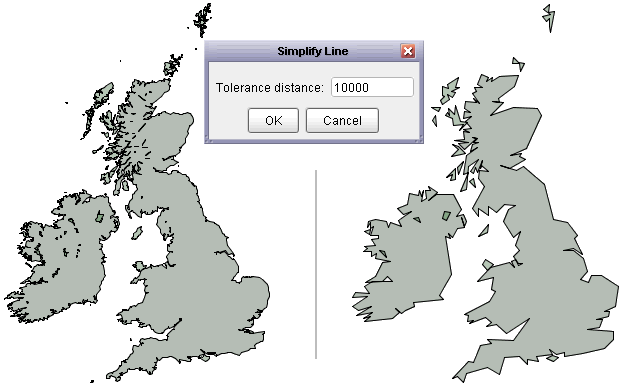
British Isles coastline before and after simplification.
The process uses the Douglas-Peucker line simplification algorithm which is applied to any line or area boundaries. Lines or areas whose maximum length are within the tolerance distance are removed entirely. Point features in a vector map are preserved.
It is sometimes useful to identify the centroids of polygons in a vector map, for example when creating polygon labels or
calculating density and proximity measures. To create a new vector map containing the centroids of all polyons in a given
vector map, select Transform->Polygons to centroids. If necessary, the new centroid vector map can be
combined with the original vector map to create single layer (see 'Combining Data' above).
Linear data produced by a GPS track can often be fragmented into smaller line objects separated by periods where the device
received no signal. Selecting Edit->Join vector lines will create a new vector map that joins up such fragmented
line elements. The result will be a single line object with no 'gaps'. This can be useful for querying the total length of a GPS
track or vector line (see Chapter 6).
LandSerf allows you to perform three types of transformation. Coordinate transformations
change the locational representation of rasters and vectors and include map projection and
rectification. Model transformations include the conversion of vector to raster models,
and the generation of contours and TINs (Triangulated Irregular Networks) from raster surfaces.
Raster value transformations allow the values of individual raster cells to be changed
through scaling, reclassification, translation etc. All are accessible through the Transform
menu.
Both rasters and vectors may be reprojected from and to global latitude/longitude to and from the following projection types:
Transform->Reproject menu item. Note that in order to reproject a
raster or vector map, it must first have some defined map projection information. If necessary this can be identified by editing
the spatial object (see Section 3.5 above).
When rasters are reprojected you are given the option of setting the new resolution and bounds of the projected raster. This allows allows square pixels to be created by setting identical x and y resolutions. You are also given the option to control whether or not to interpolate new values. Interpolation is suitable for continuous measurement data such as elevation. For categorical data, make sure this option is not selected so that new raster values are resampled from the original raster.
Many raster objects that need to be referenced to some spatial units can be georeferenced simply by editing the bounds of the four edges (see Section 3.5 above). However for some data, more sophisticated transformations are required. Rectification allows a number of 'before' and 'after' points (known as transformation control points) to be defined. LandSerf will then attempt to find an appropriate transformation that will convert the georeferenced locations of the 'before' points into appropriate 'after' locations. This transformation can then be applied to the entire raster.
To perform image rectification, display the raster that will be transformed in the main LandSerf window
and then select the Transform->Rectify... menu option. A new window similar to that
shown below will appear. Making sure the Add points option is selected, click on the main
raster display at a point at which you know the true georeferenced location. The untransformed raster
coordinates will appear in the rectification window in columns 2 and 3. Enter the georeferenced coordinates
in columns 4 and 5. Repeat this process for other points on the raster. You should aim to create a spread
of typically 10-20 points over the entire raster. To make this process easier, you may also use zoom mode
to zoom into particular parts of the raster (making sure the Add points is not selected
when using the mouse to zoom and pan).
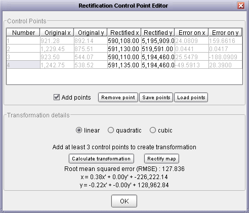
Rectification control point editor
You can control the complexity of the transformation to be applied by selecting one of the linear,
quadratic or cubic transformation options. To calculate the transformation,
press the Calculate transformation button. This will display the coefficients of the transform
along with a measure of Root Mean Squared Error (RMSE) which should be as small as possible. The error
associated each point is also displayed, and this can give a clue as to which of the control points should
be changed in order to reduce the error. It is often worth trying different linear/quadratic/cubic options
and examining their effect on the overall RMSE. The figure below shows the degree of flexibility each of
these has on the transformation process. Higher order transformations require progressively more points in
order to model the transformation (linear - 3, quadratic - 6 and cubic - 10).
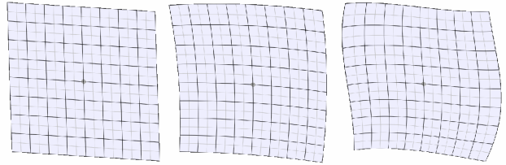
Linear (left), quadratic (middle) and cubic (right) rectification
When you are happy with an appropriate set of control points and transformation type, these can be saved
as a separate file for later use using the Save points button. To transform the raster itself,
press the Rectify map button. You will then be presented with the option of changing the
new bounds and resolution of the new raster before applying the rectification.
A raster DEM can be converted into a vector Triangulated Irregular Network (TIN) by selecting
the Transform->DEM to TIN... menu item. You will then be presented with a dialogue window
asking for various triangulation options (see figure below). To control the number of triangles produced
by the process, either specify the number explicitly and select the relevant check box, or specify some
error criterion. The error (either average as specified by the Root Mean Squared Error, or the maximum
error) represents the difference in elevation between any point on the original DEM and its elevation in
the TIN. The smaller the error specified, the greater the number of triangles required in the network.
A representation of the spatial pattern of errors can be produced by selecting
Create Error Surface from the dialogue box.
In common with other LandSerf processing options, the DEM to TIN transformation can be interrupted at any stage by clicking on the progress bar in the bottom-right corner. Once interrupted, LandSerf will create a new TIN based on the number of triangles created at the point of interruption.
The triangulation process works by successively adding triangles to the network until either any of
the selected error criteria are met, or the maximum number of triangles is reached (if specified).
Alternatively, any set of point values can be triangulated by selecting Points to TIN
from the Transform menu. This allow TINs to be created from points sets such as surface
features (pits, passes and peaks) or spot heights.
It is also possible to convert a given TIN back into a DEM. This is achieved by selecting the
Transform->TIN to DEM... menu option. LandSerf will apply a planar interpolation of
the triangle network that tends to produce a surface composed of flat facets. If necessary, these
can be smoothed using Quadratic Interpolation (see the Analysis
chapter for details).
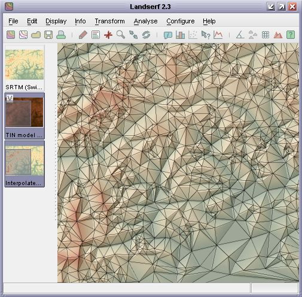
TIN over 'TIN to DEM' surface
It is possible to create a contour representation of a given DEM by selecting the
Transform->DEM to contours... menu option. Once selected, you can control the contour
interval and the elevation of the lowest contour. For DEMs with large flat areas (e.g. sea around an
island), more useful results are produced when a contours do not coincide with the elevation of the
extended flat region. Alternatively, flat areas can be reclassified as null values and be excluded
from the transformation. The Grid width option controls the resolution at which DEM cells
are sampled in order to thread contour lines. A value of 1 will sample every DEM cell and produce the
most detailed contour lines; larger values will be faster and will generalise the resulting contours.
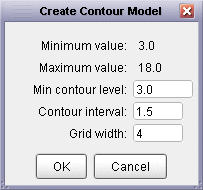
Contour creation options
By default, generated contour vectors are given the same colour scheme as the DEM from which they were
derived. This can make them difficult to see when overlaid on the same DEM, so it can useful to change
the colour scheme of one of the two models (e.g. grey contours shown in the figure below).
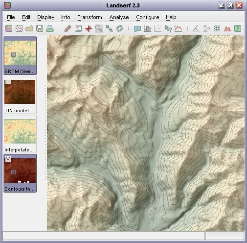
DEM with contour overlay
More general vector to raster transformations can be made by selecting the
Transform->Vector to raster... menu option. This will attempt to rasterize the currently
selected vector map to a given resolution specified. Point data can be rasterized in this way, or they
can be converted rasters of point density by selecting Transform->Point to density surface....
On selecting this menu option, a new dialogue window is shown requesting the raster resolution required
and the size of the local window used to calculate density values. This can range from 1 to the size of
the raster, but should be an odd number. The larger the number, the smoother and more generalised
the resulting density surface will be. The transformation uses Cressman interpolation to create the surface
where each cell in the new raster is the average density of neighbouring vector points weighted according to
wij= = (s - dij) / (s + dij)
where s is the selected window size and dij is the distance from the centre of the raster cell to
each neighbouring point within the window.
A series of simple transformations can be applied to the values of a raster's cells by selecting
the Transform->Raster Values... menu item. Raster values are scaled by the
value in the Scale field, translated 'up' or 'down' by the Translate value
or rounded to the nearest Round value. The elevation model can also be 'flooded' such that
all values below that in the Flood field will be assigned that value. Transformations
are only applied if the relevant check box is selected.
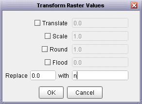
Raster value transformation replacing zeros with null values
Additionally, you can replace given raster values by entering appropriate figures in the
Replace ... with fields. If the two numeric values here are different, then all occurences
of the number in the first field will be replaced with that in the second. This can be useful for simple
reclassifications of categorical information. Rasters can also contain null values that are not
displayed and are removed from processing operations. This is particularly useful for representing missing
data, for water bodies and for excluding raster edges from processing. To replace numeric values with a
null, or a null value with a numeric equivalent, enter an n in the relevant field (see figure
above).